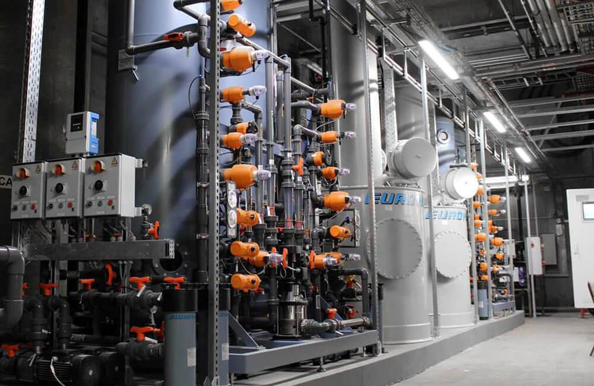
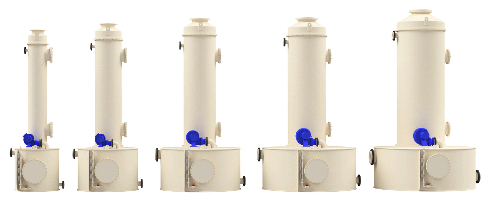

CO2дегазатор
Дегазатор CO2представляет собой эффективную и экономичную технологию снижения содержания углекислого газа в воде. Он требует минимального обслуживания, не использует расходные материалы и основан на проверенной эффективной технологии. Он особенно экономичен при высоких расходах воды и не подвержен коррозии.
Дегазатор обычно используется для увеличения фильтрующей способности другой водоочистной установки или повышения значения pH за счет уменьшения растворенного CO2перед следующей стадией очистки.
Преимущества дегазатора CO2

Широкий выбор стандартных установок
Ассортимент нашей продукции включает ряд готовых дегазаторов CO2с производительностью до 70 м3/ч.
Устройства поставляются со стандартной документацией для простоты установки, эксплуатации и обслуживания.
Пожалуйста, свяжитесь с вашим местным офисом продаж и обслуживания для получения спецификаций и дополнительной информации.
Дегазатор CO2от EUROWATER
- Технологическая башня с наполнителями
- Резервуар для деаэрированной воды
- Воздуходувка
- Контроль уровня приема воды
- Выключатель защиты от сухого хода подкачивающего насоса из резервуара
- Перелив при высоком уровне воды в водохранилище
Как это работает
Процесс дегазации СО2
Вода рассеивается сверху, просачиваясь через объем пластиковых наполнительных колец.
Атмосферный воздух одновременно нагнетается воздуходувкой снизу, поднимаясь встречным потоком вверх через кольца наполнителя, что приводит к массопереносу СО2из воды.
Поскольку парциальное давление СО2 в атмосферном воздухе ниже, чем парциальное давление растворенного СО2в воде, СО2будет переходить из воды в воздух. Образовавшаяся смесь воздуха и CO2выходит через верх, а дегазированная вода выходит через низ.
Применение блока дегазации CO2
Электростанции
Дегазатор СО2 используется для паровых котлов высокого давления на ТЭЦ.
Промышленные паровые котлы
Дегазатор CO2помогает предотвратить коррозию и обеспечить оптимальную очистку воды для промышленных паровых котлов.
Деминерализаторы
Дегазатор CO2 может увеличить емкость анионообменников в ионообменном деминерализаторе.
Референція
CO2 дегазация котловой воды
Для производства желатина требуется чистая деминерализованная вода и пар пищевого качества. Это достигается за счет использования технологии UPCORE™ в сочетании с дегазацией CO2.
Чем можем быть полезны?
Наша команда специалистов готова ответить на ваши вопросы об использовании дегазации CO2при очистке воды.
Свяжитесь с вашим местным отделом продаж сегодня.